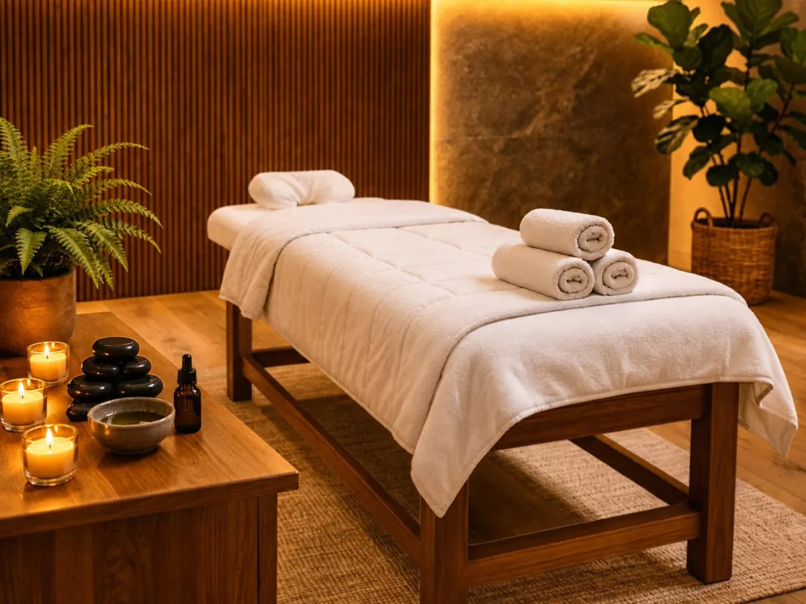

Thaise massage, sportmassage of duomassage in Nijmegen: de beste salon per soort
Bijgewerkt op 22 november 2026.
Nijmegen heeft meer dan honderd massagesalons en praktijken. De ene is gespecialiseerd in Thaise massage, de andere in sportmassage of in massage tijdens je zwangerschap. Weet je wat voor massage je zoekt, dan vind je hieronder per soort de adressen die wij aanraden.
Alles over massage in Nijmegen, van soorten massage tot je eerste bezoek, lees je op onze hoofdpagina massage in Nijmegen.

Zo hebben we gekozen
We lazen in november 2026 de websites van de massagesalons in onze bedrijvengids en kozen per soort massage de salons die daar het meest in thuis zijn. De salons in deze gids zeggen er zelf duidelijk bij dat ze alleen gewone massages geven.
Thaise massage
Bij een traditionele Thaise massage lig je aangekleed op een mat, en de masseur werkt met druk en rekoefeningen. Wil je het rustiger, kies dan een oliemassage.
Siam Thai Massage: tot laat, met een sauna erbij
In de Van Berchenstraat kies je uit traditionele Thaise massage, oliemassage, hot stone en kruidenstempels, of een behandeling voor alleen je nek, hoofd of voeten. Alleen in deze Nijmeegse salon combineer je je massage met een korte sauna.
De salon is elke dag tot 's avonds laat open. Het station en parkeergarage Keizer Karelplein liggen op loopafstand.
Goed voor: na een lange werkdag.
Baipho Thai Massage: gewoon binnenlopen
Aan de Molenweg kun je zonder afspraak binnenlopen. Je kiest zelf hoe lang je blijft, van een half uur tot twee uur, en er is een massage speciaal tegen hoofdpijn en migraine.
Baipho is zeven dagen per week open, doordeweeks tot 's avonds laat. Je parkeert gratis bij de salon.
Goed voor: wie spontaan een massage wil.
Kanta Thaise Massage: in Nijmegen-Oost
In het gezondheidscentrum aan het Daniëlsplein masseert Pimchaya volgens de traditionele Thaise methode, die ze in Thailand leerde. Ze spreekt vooraf met je af waar de aandacht naartoe moet.
Je kiest ook voor olie, hot stone of kruidenstempels. Let op: de ingang is aan de De la Reystraat, niet via het wijkcentrum.
Goed voor: een vaste nek of schouder.
Samen een duomassage
Mandarin Spa: elke dag tot tien uur 's avonds
Mandarin Spa bestaat sinds 2006. Je krijgt je behandeling in een eigen kamer met douche of bad, en je kiest uit Thaise, Zweedse en sportmassage, hot stone of een hammam.
Met z'n tweeën boek je een duomassage. De salon is elke dag open van tien uur 's ochtends tot tien uur 's avonds.
Goed voor: een avondje samen ontspannen.
Royal Thai Massage & Spa: samen in één kamer
In de Bloemerstraat lig je bij de duomassage met z'n tweeën in één kamer. Je kiest uit Thaise massage, een aromamassage met kokosolie, deep tissue of hot stone.
Je komt al gedoucht en je betaalt vooraf. In de online agenda zie je welke tijden nog vrij zijn.
Goed voor: een cadeau voor jullie tweeën.
Sportmassage
Sport Sneller: voor lopers en Vierdaagsegangers
In het souterrain van het Augustinusklooster werkt sportzorgmasseur Henriette Driesen aan stijve kuiten en vermoeide spieren. Ze tapet ook gewrichten en voeten, en prikt blaren.
Ze geeft daarnaast cupping-, lymfe- en hoofdpijnmassage. Op woensdag en donderdag kun je er 's avonds terecht.
Goed voor: wie traint voor een loop of de Vierdaagse.
Sportmassage Nijmegen: in Sportcentrum Waalsport
Véronique van Zuidam geeft sinds 2010 sportmassages in Sportcentrum Waalsport, in Nijmegen-Noord. Waar nodig voegt ze bindweefselmassage, shiatsu of voetreflex toe.
Wil je iets lichters, dan kies je een stoelmassage. Je plant je afspraak zelf online.
Goed voor: sporters in Nijmegen-Noord.
Tijdens je zwangerschap
Hands on Your Health: zwanger of net bevallen
Aan de Luipaardstraat geeft Chantal Boekdrukker zwangerschapsmassage en een behandeling na de bevalling. Ze doet ook Indiase hoofdmassage en voetmassage.
Met iemand anders volg je een workshop rug-, nek- en schoudermassage. Een cadeaubon is een leuk kraamcadeau.
Goed voor: aanstaande en kersverse moeders.
Chill & Refill: massage en een Japanese head spa
In Salon Suites bij het Valkhof begin je met een gesprek, en daarna kies je samen een behandeling. Er is zwangerschapsmassage, hot stone en massage voor nek, schouders of onderrug.
Sinds 2025 is er ook een Japanese head spa. Samen kan ook: de een krijgt een massage, de ander een head spa. Je boekt online, ook voor 's avonds en zaterdag.
Goed voor: wie even helemaal wil uitschakelen.
Hot stone
Care Studio Flow: hot stone in Dukenburg
In deze kleine studio aan het Tolhuis kies je een hotstonemassage met warme stenen, een Chinese massage of een gezichtsmassage. Heb je tijd, boek dan een wellness treatment van anderhalf tot tweeënhalf uur.
Je plant je afspraak zelf in de online agenda.
Goed voor: wie in Dukenburg of Lindenholt woont.
Ook goed
- Ruimte voor Massage in het Radboudumc, voor patiënten, bezoekers en medewerkers. Ook bereikbaar met rolstoel of ziekenhuisbed.
- Srivatsa Massage & Shiatsu in het Augustinusklooster: van shiatsu en Thaise massage tot duomassage.
- Wave in het Van der Valk in Lent, met ontspannings-, sport- en zwangerschapsmassage.
Twijfel je welke massage bij je past? Lees hoe ontdek je welke massage het beste werkt, of ga voor een hele dag ontspannen naar een sauna in Nijmegen.
Meer in onze gids massage in Nijmegen.
Veelgestelde vragen
Waar krijg je een Thaise massage in Nijmegen?
Onder meer bij Siam Thai Massage in de Van Berchenstraat, Baipho aan de Molenweg, Kanta aan het Daniëlsplein, Royal Thai in de Bloemerstraat en Mandarin Spa aan de Van Peltlaan.
Kun je zonder afspraak een massage krijgen?
Bij Baipho Thai Massage aan de Molenweg kun je zonder afspraak binnenlopen. Bellen om een plek te reserveren kan ook.
Waar boek je een duomassage in Nijmegen?
Bij Mandarin Spa, Royal Thai Massage & Spa, Siam Thai Massage en Baipho. Bij Chill & Refill krijgt de een een massage en de ander tegelijk een head spa.
Wordt een massage vergoed?
Meestal niet. Sommige therapeuten zijn lid van een beroepsvereniging, en dan vergoeden sommige zorgverzekeraars een deel uit de aanvullende verzekering. Vraag het na bij je verzekeraar.